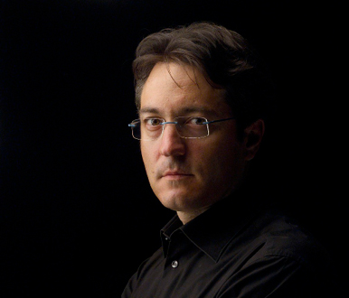

JESÚS ECHEVERRÍA
A los 23 años fundó la Orquesta de Cámara de Donosti. Ese mismo año obtiene una bolsa de estudios de la Diputación de Gipuzkoa para estudiar Dirección de orquesta en el conservatorio de Viena con Julius Kalmar. Un año más tarde, pasa el examen de admisión en uno de los centros más importantes del mundo, la Royal Academy of Music de Londres, donde estudió Dirección de Orquesta por tres años consecutivos. Entre los profesores destacan: Sir Colin Davis, Colin Metters, George Hurst y John Carewe.
En 1988, comienza su colaboración con la Orquesta Sinfónica de Navarra. El año siguiente es el que conocerá su debut con la Orquesta Sinfónica de Euskadi.
Actualmente, es profesor de Análisis de la Música Contemporánea y coordinador de Estudios Orquestales, en Musikene (Centro Superior de Música del País Vasco), y el director titular de la Orquesta Civitas Musicae.
Julio Gergely
Es licenciado en Dirección Coral por la Universidad de George Dima de Cluj-Napoca en su Rumania natal. Inició su trayectoria profesional como ayudante de dirección del Coro de la Filarmónica de Cluj-Napoca. En 1983, se traslada a España como Ayudante de dirección del Coro de la Comunidad de Madrid. Asimismo, durante los veinte años que se mantiene en el puesto alterna su labor con la dirección, en etapas sucesivas, del Coro Universitario Gaudeamus, del Coro Ecuménico Alemán de Madrid y de la Coral Polifónica de Torrejón de Ardoz. En 2004, es nombrado Ayudante de Dirección del coro titular del Teatro Real de Madrid hasta que, dos años más tarde, asume la dirección del Coro de la Asociación de Amigos del Teatro de la Maestranza de Sevilla.
Entre los directores junto a los que ha trabajado, destacan Michael Plasson, Jesús López Cobos, Miguel Groba, Miguel Roa, Pedro Halffter, Rafael Frühbeck de Burgos y Mauricio Benini, entre otros.